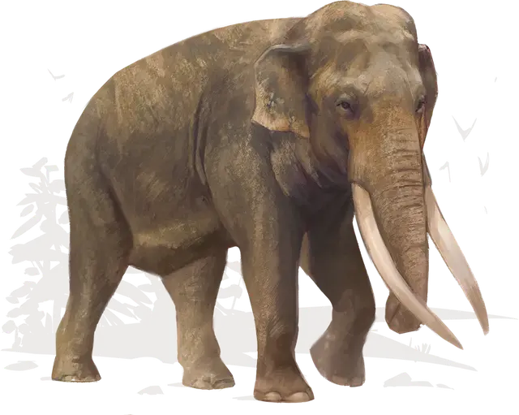

Слон
Elephant
Огромный Зверь, без мировоззрения

Класс Доспеха 12 (природный доспех)
Хиты 76 (8к12 + 24)
Скорость 40 футов
| мод | спас | ||
|---|---|---|---|
| СИЛ | 22 | +6 | +6 |
| ЛОВ | 9 | −1 | −1 |
| ТЕЛ | 17 | +3 | +3 |
| мод | спас | ||
|---|---|---|---|
| ИНТ | 3 | −4 | −4 |
| МДР | 11 | +0 | +0 |
| ХАР | 6 | −2 | −2 |
Чувства пассивное Восприятие 10
Опасность 4 (1100 опыта)
Бонус мастерства +2
Среда обитания Луг
Особенности
Растаптывающий рывок. Если слон переместится как минимум на 20 футов по прямой к существу, а затем в том же ходу попадет по нему атакой бодания, цель должна преуспеть в спасброске Силы Сл 12, иначе будет сбита с ног. Если цель сбита с ног, слон может бонусным действием совершить по ней одну атаку растаптыванием.
Действия
Бодание. Рукопашная атака оружием: +8 к попаданию, досягаемость 5 футов, одна цель. Попадание: Колющий урон 19 (3к8 + 6).
Растаптывание. Рукопашная атака оружием: +8 к попаданию, досягаемость 5 футов, одно лежащее ничком существо. Попадание: Дробящий урон 22 (3к10 + 6).